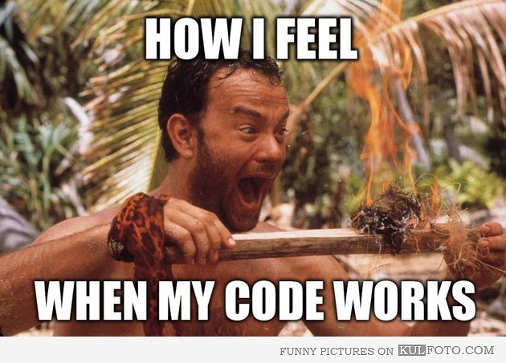

Angular Filters
Beyond OrderBy and LimitTo
Ng-Conf January 2013
Sharon DiOrio • [@sharondio]
Every presentation has a story*
* It's a rule. I read it in a book somewhere
The landscope in 2011 was very different
The Code I wrote in 2 hours

I was sure it was magic
http://xkcd.com/373/
I won't be covering:
- currency
- date
- json
- limitTo
- lowercase/uppercase
- number
- orderBy
Go read the docs.
Custom String Filter
angular.module('phonecatFilters', [])
.filter('checkmark', function() {
return function(input) {
return input ? '\u2713' : '\u2718';
};
});
Filter: Filter
click-me
code me
Custom Array Filter
click-me
code-me
Requisite Testing Slide Goes Here
describe('filter', function() {
beforeEach(module('phonecatFilters'));
describe('checkmark', function() {
it('should convert boolean values to unicode checkmark or cross',
inject(function(checkmarkFilter) {
expect(checkmarkFilter(true)).toBe('\u2713');
expect(checkmarkFilter(false)).toBe('\u2718');
}));
});
});
(Seriously. Just do it.)
Chaining Filters
<tr ng-repeat="beer in beers | limitTo : 20 | filter : filterByCategory | orderBy : sortBy ">
vs.
<tr ng-repeat="beer in beers | filter : filterByCategory | orderBy : sortBy | limitTo : 20">
code-me
Performance of Filters
click-me
Don't Use Filters When...
- Doing DOM Manipulation
- Accessing data
- Querying your data service is faster
- You're using unstable functions
- Restricting access to information
Filters can still be Magical
click-me
Thank you!
https://github.com/Sharondio/talks/